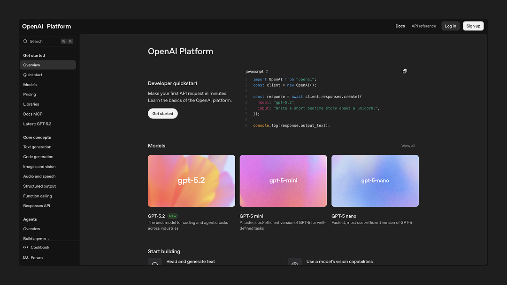
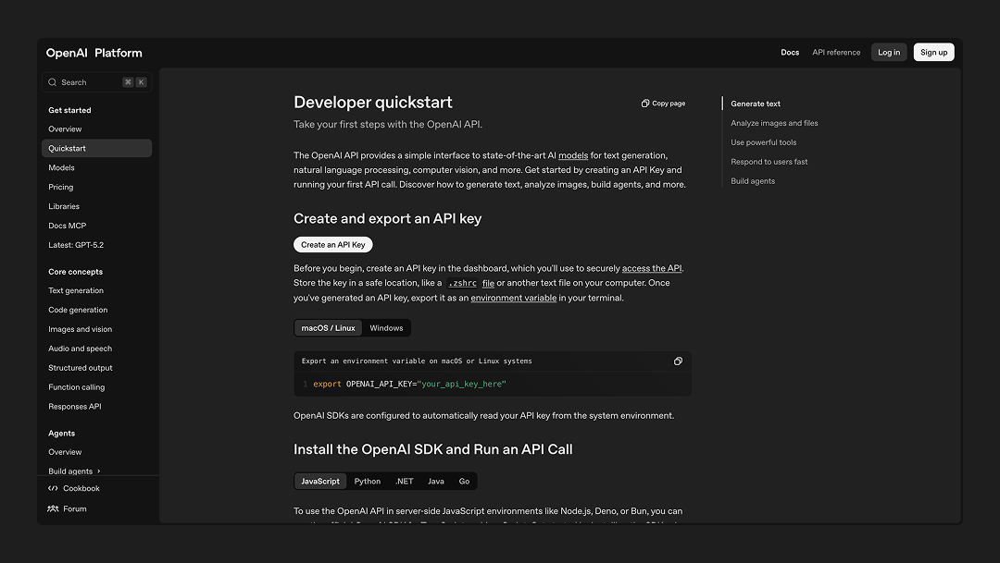
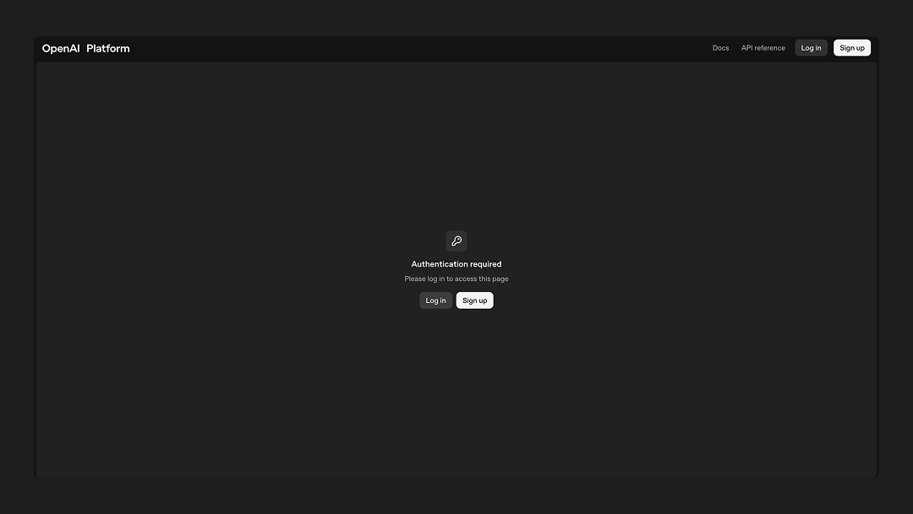
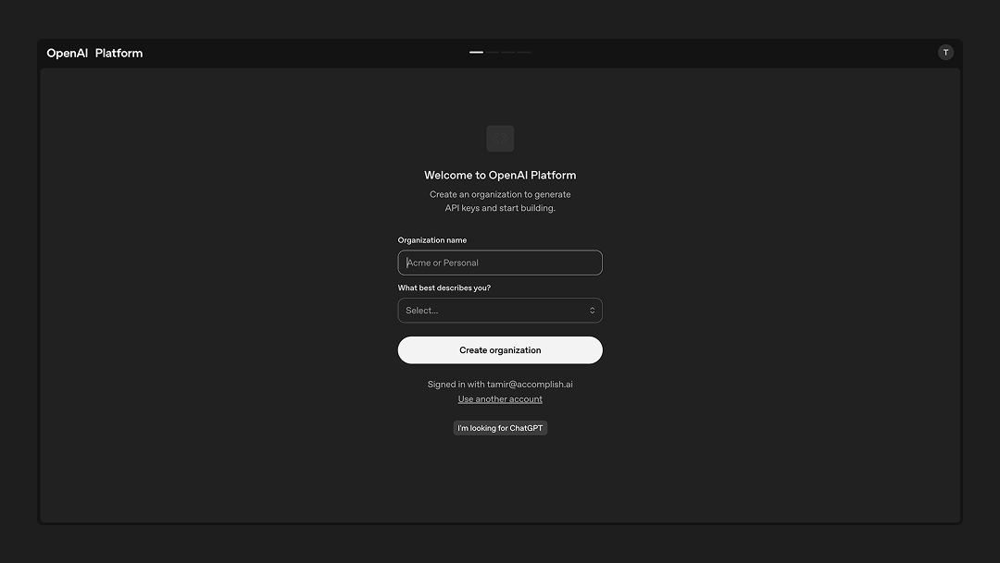
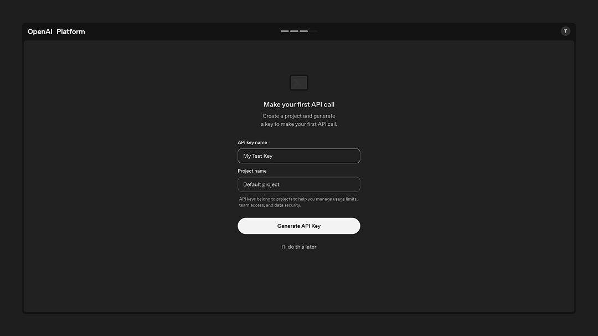
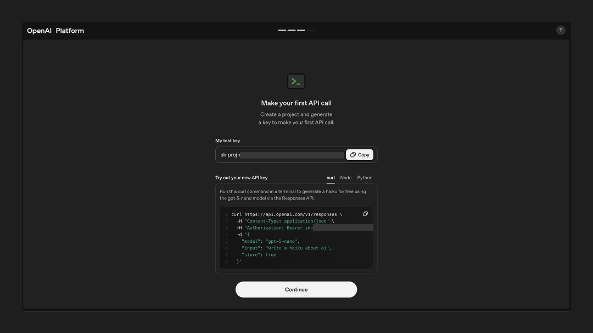

OpenAI API Key
Learn how to obtain your OpenAI API key to use GPT models with Openwork™.
Step 1: Create an OpenAI Account
Navigate to platform.openai.com and click the "Sign up" button. You can register using your email address or sign up through your Google, Microsoft, or Apple account for faster access.
During registration, you'll need to verify your email address and provide a phone number for SMS verification. This two-factor authentication helps secure your account and prevent abuse of the API services.
Step 2: Access the API Dashboard
Once your account is verified and you're logged in, you'll be directed to the OpenAI Platform dashboard. If you're not automatically redirected, go to platform.openai.com and sign in with your credentials. You will need to create an organization to generate API keys and start building.
You will be prompted to invite your team, and then to make your first API call. After this step, you will be prompted to add some credits or billing details. You can always skip this step and click 'I'll do this later.'
Step 3: Navigate to your Dashboard
In the left sidebar of your dashboard, locate and click on "API keys". You can also access this directly at platform.openai.com/api-keys.
This section displays all your existing API keys (if any) and allows you to create new ones or revoke old ones.
Step 4: Generate a New API Key
Click the "Create new secret key" button. A dialog box will appear where you can:
- Name your key (optional but recommended): Use descriptive names like "Production App" or "Development Testing" to help you identify different keys for different purposes
- Set permissions: Choose whether this key should have full access or restricted permissions
- Configure project association: Link the key to specific projects if you're managing multiple applications
Step 5: Save Your API Key Immediately
Critical: Once generated, your API key will be displayed only once. Copy it immediately and store it securely. OpenAI cannot retrieve or display this key again for security reasons.
Best practices for storing your key:
- Use environment variables in your development environment
- Store in secure key management systems (AWS Secrets Manager, Azure Key Vault, etc.)
- Never commit API keys to version control systems like Git
- Avoid hardcoding keys directly in your source code
Step 6: Set Up Billing
Before you can use your API key, you need to add billing information:
- Click on "Settings" in the sidebar, then select "Billing"
- Click "Add payment method" and enter your credit card details
- Set up usage limits (recommended for new users):
- Configure monthly budget limits to prevent unexpected charges
- Set up email alerts for when you approach your limits
- Review the pricing page to understand costs per model and token usage
Note: If you add Credits to your account at the start, then you'll be prompted to add your card details and set up billing.